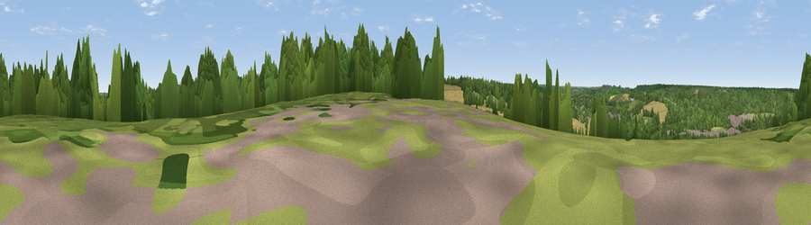

Viewpoint near Chartham
#42710 in England · top 83% of its area beats it · near Chartham · footpathWhere it is
The exact computed spot (TR 12225 55125). Click the marker for map links.
Public access: a public right of way passes within 17 m of this spot. Computed from Natural England's CRoW access layer and OpenStreetMap rights of way — not the legal definitive map. Always verify locally.
The view, rendered

A 360° render of this exact spot computed from the terrain model, tree cover and land cover — summer colours, afternoon light, calibrated against photographs of famous viewpoints. Real trees, hedges and buildings will differ in detail.
The panorama
Grey silhouette: terrain skyline in each direction (720 bearings, Earth curvature and refraction included). Dashed green: skyline with trees (+15 m) and buildings (+8 m) as obstacles. Blue strip: how far the ground is visible on each bearing.
Where the view opens
Wedge length = distance to the farthest visible ground on that bearing (vegetation-aware). Rings at 10, 25 and 50 km.
What fills the view
46% woodland · 24% cropland · 20% grassland · 8% built-up · 2% water
Angular shares of the visible panorama (visual magnitude), not map area. Landscape diversity 0.57 (0–1 Shannon).
Key numbers
More beautiful places nearby
The staircase of upgrades: each row has a higher view potential than everything closer. Driving times are estimates from straight-line distance, calibrated against real road routing — check an actual route before setting out.
| Place | Direction | Drive | Score |
|---|---|---|---|
| Viewpoint near Chartham | SW · 1 km | ~4 min | 25.1 |
| Viewpoint near Chilham | WSW · 5 km | ~11 min | 31.1 |
| Viewpoint near Crundale | SW · 6 km | ~13 min | 36.2 |
| Viewpoint near Broad Oak | NE · 6 km | ~13 min | 41.6 |
| Victory Woods Link Sculpture | NNW · 7 km | ~15 min | 50.7 |
| Viewpoint near Shottenden | W · 8 km | ~16 min | 60.2 |
| Viewpoint near Yorkletts | NNW · 9 km | ~18 min | 60.9 |
| Viewpoint near Wye | SSW · 10 km | ~19 min | 70.9 |
51.25578, 1.04004 · source: screening · position refined by local search. Computed location — check access rights before visiting.